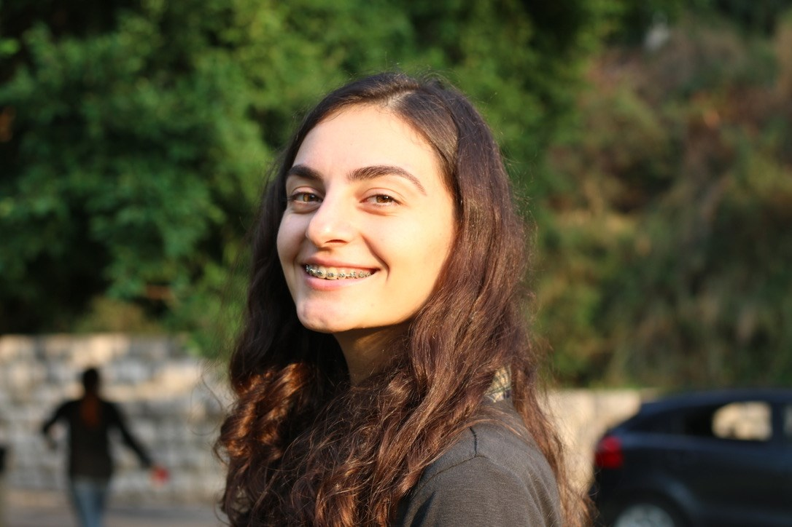

FRONT-END WEB DEVELOPER
Summary
I started off as a teacher. Considering different learners have different learning abilities, I had to learn different teaching techniques to ensure I was helping every student. This has helped me in adapting the fast pace of changing technologies. I am eager to learn every day and improve my soft and hard skills.
I got drawn into the development world when I came across "Hour of Code on Khan Academy," I started to teach students the basic HTML and CSS, and I, myself, got hooked.
Over the last months, I have managed to build a portfolio website, FakeStore and a to-do list project using HTML, CSS, JavaScript and React. This may seem like a small feat, but I have learnt a ton of things like working with a diverse team to achieve results thanks to Microverse, where together with developers from all over the world, we collaborate through pair-programming sessions and build real-life projects together.
I believe my hard work, love for clean code, and accessible and responsive design will lead my way to a high-level role in the companies.
Skills
- Front-End : JavaScript, React, Redux, HTML5, CSS3, Scss, Bootstrap
- Back-End : Ruby, Rails, PostgresSQL
- Tools & Methods : Git, GitHub, Heroku, Netlify, Mobile/Responsive Development, RSpec, TDD, Chrome Dev Tools
- Professional : Remote Pair-Programming, Teamwork, Mentoring
Project Examples
- Space-Travelers-Hub — This is a collaborative web application that allows users to book rockets, and dragons and joins selected space missions using the real live data from the SpaceX API.
- WORLD-NEWS — This is a fully responsive 3 page website following the Adobe XD design.
- FakeStore — This is a web application that provides information on each product of the store.
Experience
MICROVERSE
Professional Projects’ Reviewer
- Reviewing new students of Microverse professional skills projects.
- Proposing improvements and changes to improve students’ profiles on all platforms.
- Helping students by giving them some support and creative ideas.
Unilab
Front-end Developer Intern
- Worked on real-world projects in a collaborative environment and improved presentation skills.
- Collaborated with the Project manager, designers, and front-end developers’ team.
- Proposed improvements to code organization to improve code quality and overall performance.
Code Example
The Solution of the HackerRank programming challenge called Beautiful Days
function beautifulDays(i, j, k) {
let count = 0
for(let z = i; z <= j; z++){
let str = z.toString()
let reverse = str.split("").reverse().join("")
if((z - parseInt(reverse)) % k === 0){
count++;
}
}
return count;
}
Education
MICROVERSE
Full-stack Web Development Program, Full Time
- Spent 700+ hours mastering algorithms, and full-stack development while simultaneously developing projects with Ruby, Rails, JavaScript, React, and Redux.
- Developed skills in remote pair-programming using GitHub, industry-standard git-flow, and daily standups to communicate and collaborate with international remote developers.
Free University of Tbilisi
International Relations, Middle-East studies
- Demonstrated great skills in acquiring new languages: Arabic, and French.
- Took an active part in interdisciplinary interactions within the university and was awarded as one of the best presenters at the conference.
English
IELTS certified C1 level